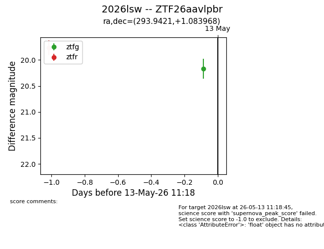
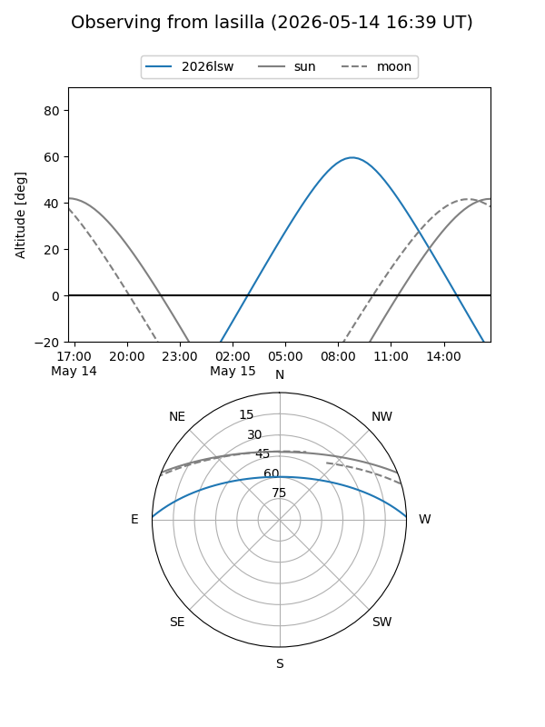
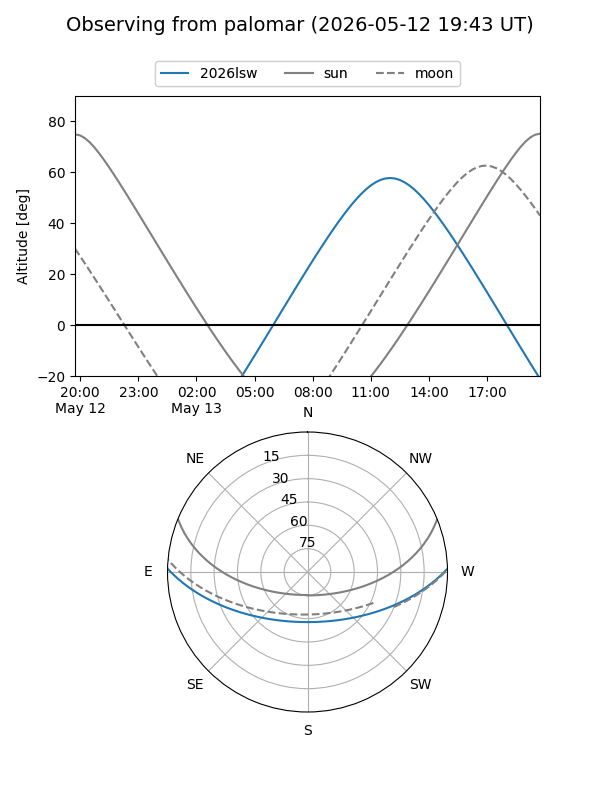
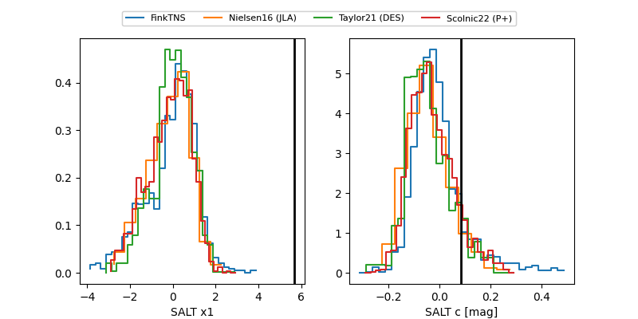

2026lsw
Target 2026lsw at 2026-05-13 11:20
Aliases and brokers:
FINK: link
Lasair: link
ALeRCE: link
TNS: link
YSE: link
alt names
ZTF26aavlpbr (ztf,fink_ztf)
2026lsw (tns,yse)
Coordinates:
equatorial (ra, dec) = 293.9421,+1.08397
equatorial (HMS+DMS) = 19:35:46.11,+01:05:02.28
galactic (l, b) = (39.0097,-9.34744)
Flags:
Photometry:
last ztfg=20.17, ztfr=19.76
1 ztfg, 1 ztfr detections
Lightcurve

Visibility


Additional plots
